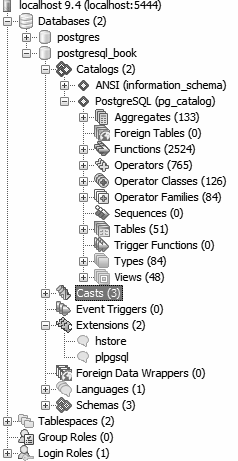
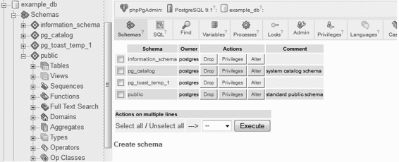
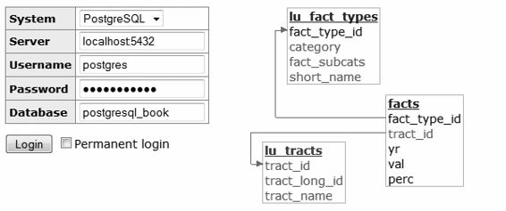

PostgreSQL 常用的管理工具有四种：psql、pgAdmin、phpPgAdmin 和 Adminer。PostgreSQL 的核心开发团队维护着前三种，因此它们一般会随着 PostgreSQL 的版本发布而同步更新。Adminer 并非 PostgreSQL 的专用管理工具，它支持管理多种类型的关系型数据库，包括 SQLite、MySQL、SQL Server 和 Oracle 等。除了我们刚刚提到的这四种以外还有大量优秀的管理工具，开源的和商业的都有。
psql 是一种用于执行查询的命令行工具，每个 PostgreSQL 发行版中都自带 psql。它有一些独特的功能，比如导入或者导出基于分隔符（分隔符可以是逗号或者制表符等字符）格式的平面数据文件，以及生成简易的 HTML 格式报表等。psql 是 PostgreSQL 从诞生之初就一直附带的命令行工具，它是很多资深 PostgreSQL 专家日常操作工具的不二之选，非常适用于只有控制台字符界面而无图形用户界面的使用场景。另外在通过 shell 脚本执行数据库操作时，psql 也是必备工具。不过新用户一般更喜欢使用图形界面工具，而且也无法理解为什么“老”一代人会对命令行方式那么执着。
pgAdmin（www.pgadmin.org）是一种广泛使用的开源 PostgreSQL 图形界面管理工具。如果你的 PostgreSQL 安装包里没有附带此工具，请从其官网单独下载安装。
pgAdmin 运行于图形化桌面环境下，可以同时连接到多个 PostgreSQL 服务器上，这些服务器可以是安装在任意操作系统平台上的任意 PostgreSQL 版本。
即使你的数据库安装在只有字符控制台界面的 Linux 服务器上，只要你在本地工作站上安装了 pgAdmin，也可以用这种强大的图形化工具对其进行管理。
图 1-1 是 pgAdmin 的界面示意图。

图 1-1：pgAdmin
如果你对 PostgreSQL 还不太熟悉，那么 pgAdmin 毫无疑问将是你开始 PostgreSQL 学习之旅的最佳入口。只需要在主界面上摸索一下，你就可以对 PostgreSQL 的丰富功能一览无遗。如果你正打算逃离 SQL Server 阵营，并且习惯于 SQL Server 的 Management Studio，那么很快就能适应 pgAdmin。
phpPgAdmin（https://github.com/phppgadmin/phppgadmin）是一种免费的基于 Web 页面的管理工具，其界面如图 1-2 所示。它是从流行的 MySQL 管理工具 phpMyAdmin 移植而来的，二者的差别主要在于 phpPgAdmin 新增了对 schema、过程化语言、类型转换器、运算符等对象的管理功能。如果你对 phpMyAdmin 很熟悉，会发现 phpPgAdmin 的界面风格与其完全类似。

图 1-2：phpPgAdmin
如果你正在寻找一款除了能够管理 PostgreSQL，还能管理别的数据库的整合型工具，那么 Adminer（http://www.adminer.org/）将是你合适的选择。Adminer 是一款轻量级的开源 PHP 应用程序，可以在同一套图形界面上管理 PostgreSQL、MySQL、SQLite、SQL Server 以及 Oracle 等多种数据库。
Adminer 有一种独特的功能让我们印象深刻：它能够以图形化方式展示数据库中的对象，并将外键约束关系以连接线的方式展示出来。另外，整个 Adminer 程序的本体仅包含一个 PHP 文件，非常简洁，这可以大大减少你安装部署时的麻烦。
图 1-3 中，左侧是登录屏幕的截图，右侧是表间关系图形化后呈现的效果。很多用户会因为登录屏幕上没有填写端口号的地方而感到困惑。如果 PostgreSQL 使用标准的 5432 侦听端口，那么登录时不填也没问题；但如果不是，那么就需要在服务器名称后面加上端口号，注意用冒号分隔主机名和端口号，如图 1-3 所示。

图 1-3：Adminer
对于简单的查询和修改操作来说，Adminer 的功能是足够的。但为了支持多种数据库，Adminer 的功能体系已经被裁剪成了各数据库均支持的最小公共集合，因此你无法实现 PostgreSQL 所特有的一些操作，比如创建新用户、授予权限或者是查询当前权限列表等。如果你是 DBA，那么建议使用 pgAdmin，当然也可以安装一套 Adminer 以备不时之需。